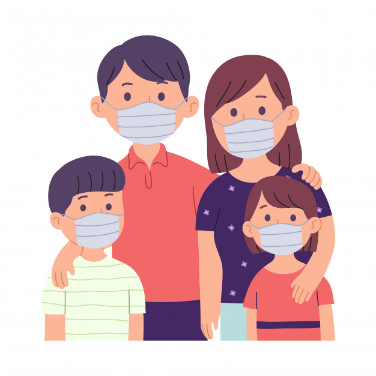

A continuación listamos las músicas más escuchadas por los estudiantes universitarios de Bolivia.
| PLAY | REPRODUCTOR | TÍTULO |
|---|---|---|
| Coronavirus-Medidas de prevencion | ||
 |
¿Que es el coronavirus? | |
| Enterate como lavarse las manos | ||
| Medidas para prevenir el COVID-19 | ||
|  | COVID-19, Medidas de Prevencion |